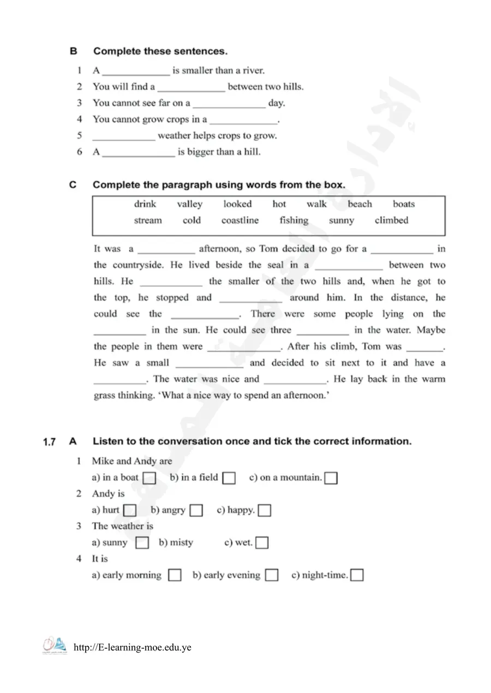

1.7 Listening and describing locations (Workbook) 1.7 A Listen to the conversation once and tick the correct information.
1 Mike and Andy are a) in a boat [ ] b) in a field [ ] c) on a mountain. [ ] 2 Andy is a) hurt [ ] b) angry [ ] c) happy. [ ] 3 The weather is a) sunny [ ] b) misty [ ] c) wet. [ ] 4 It is a) early morning [ ] b) early evening [ ] c) night-time. [ ] (WB p. 7) 5 At the end of the conversation, Andy and Mike are a) happy [ ] b) worried [ ] c) amazed. [ ]
B Listen again and look at the map. Answer the questions by marking the positions on the map. 1 Where did Andy and Mike cross the river together? 2 Where did Andy leave Mike? 3 Where did Andy fall? 4 Where are they now?
C Describe to your partner the location of Andy and Mike exactly. Use some of the following words and phrases. near ... north of ... / south of ... on the east side of ... about ... kilometres from ... D Role play a telephone conversation with your partner. Pupil A: Imagine you are stuck on Snow Peak. You have a mobile phone Decide where you are. Call Snow Peak Rescue. Describe your location. Pupil B: Your work for Snow Peak Rescue. You get a call from someone stuck on the mountain. It's getting dark, so you have to find exactly where he/she is. E Work in pairs. Think of a place in the countryside and describe its location. Your partner tries to guess where it is.
Your work for Snow Peak Rescue (خطأ مطبعي لـ You work)، كما سقطت النقطة بعد mobile phone في دور الطالب A، وحُفظتا حرفياً التزاماً بالقاعدة الذهبية رقم 2.[
{
"num": 1,
"question": "Why must activities 1.7 A (questions 1–5) and 1.7 B (marking Andy & Mike on the map) be completed with your teacher or the official cassette?",
"model_answer": "The Pupil's Book and Workbook do not print the listening transcript of Andy and Mike's conversation (it belongs to the Teacher's Book cassette script). Therefore, marking where they crossed the river, where Andy fell, or ticking 'worried/hurt' must come from listening to the official audio rather than guessing.",
"explain_ar": "طبقاً لقواعد الأمانة العلمية (Rule 7)، لم نخترع إجابات شريط غير متاح في الملفات الرسمية، وسُجّل غياب شريط 1.7 في REVIEW_NEEDED.md. يمكنك التدرّب عملياً على مهارات الدرس في النشاطين C وD أدناه."
}
][
{
"num": 1,
"prompt": "1 Cliff Farm is ______ of Snow Peak.",
"answers": [
"north"
]
},
{
"num": 2,
"prompt": "2 High View is ______ of Snow Peak.",
"answers": [
"south"
]
},
{
"num": 3,
"prompt": "3 Valley Side is on the ______ side of Snow Peak.",
"answers": [
"east"
]
},
{
"num": 4,
"prompt": "4 The central river passes ______ Sheep Moor before reaching Snow Peak.",
"answers": [
"near"
]
},
{
"num": 5,
"prompt": "5 Looking at the scale bar, Snow Peak is about 15 ______ east of North Edge.",
"answers": [
"kilometres"
]
}
][
{
"label_ar": "1) اذكر معْلَماً رئيسياً قريباً (near ...)",
"placeholder": "I am stuck near Snow Peak, close to the small circle at the top."
},
{
"label_ar": "2) حدد موقعك شمال أو جنوب مَعْلَم آخر",
"placeholder": "I am south of Cliff Farm and north of High View."
},
{
"label_ar": "3) حدد الجهة (on the east / west side of ...)",
"placeholder": "I am on the east side of the river crossing near Snow Peak."
},
{
"label_ar": "4) قدّر المسافة بمقياس الخريطة (about ... kilometres from ...)",
"placeholder": "I am about 10 kilometres west of Valley Side."
}
]{
"wb_ocr_vs_image": "قُورنت صفحتا WB ص 6–7 مع tesseract.js eng: أخرجت OCR التسمية '17 A' و'tis' (It is) ورموزاً مشوّشة لأسماء الخريطة، وصُحّحت جميعها بصرياً من شرائح 250 DPI لخريطة WB ص 7؛ كما حُفظ الخطأ المطبعي 'Your work for Snow Peak Rescue' حرفياً وسُجّل غياب نص الشريط السماعي في REVIEW_NEEDED.md."
}